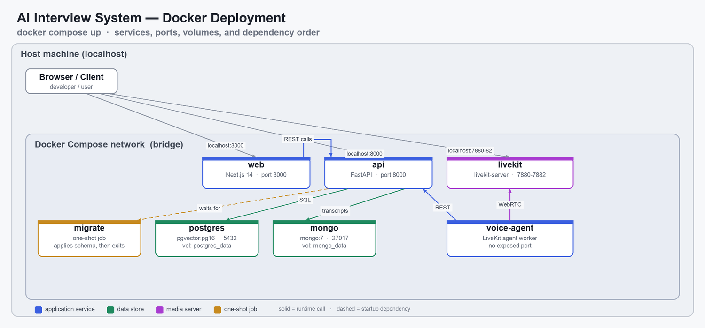
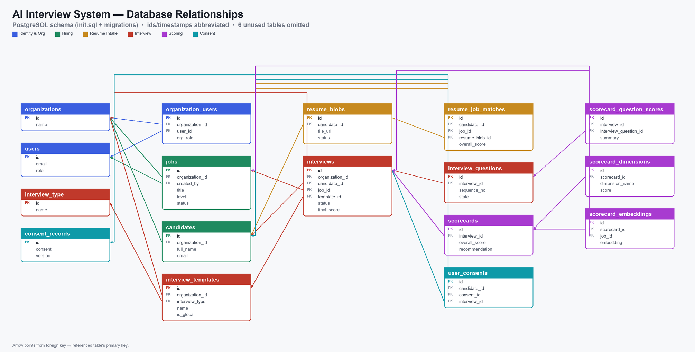
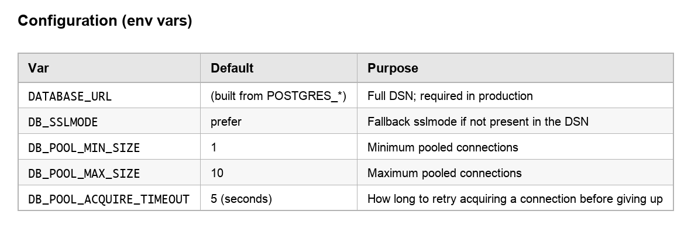
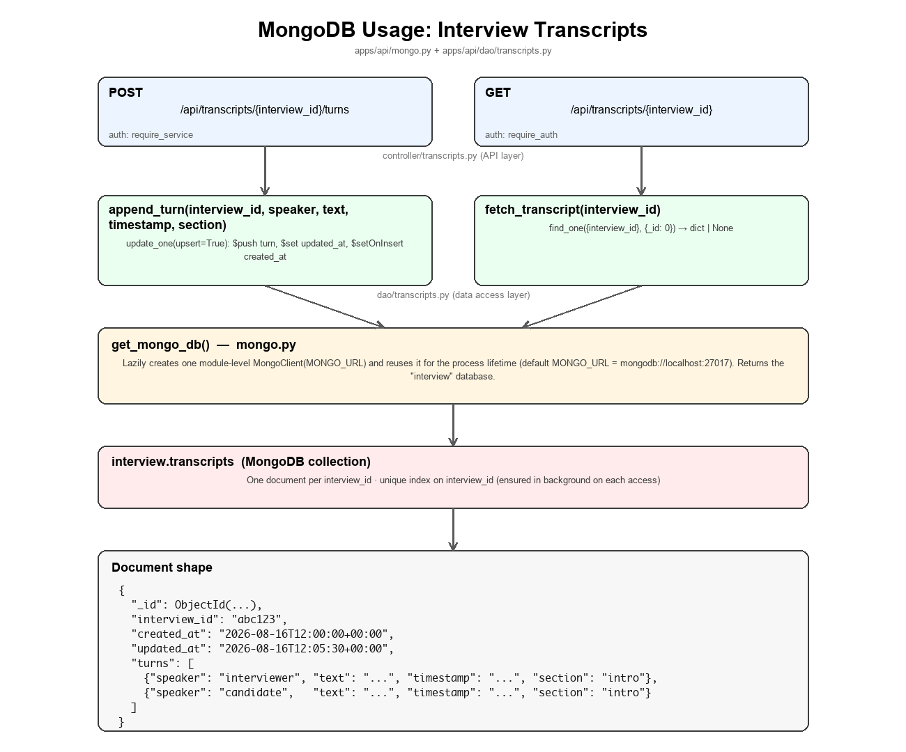
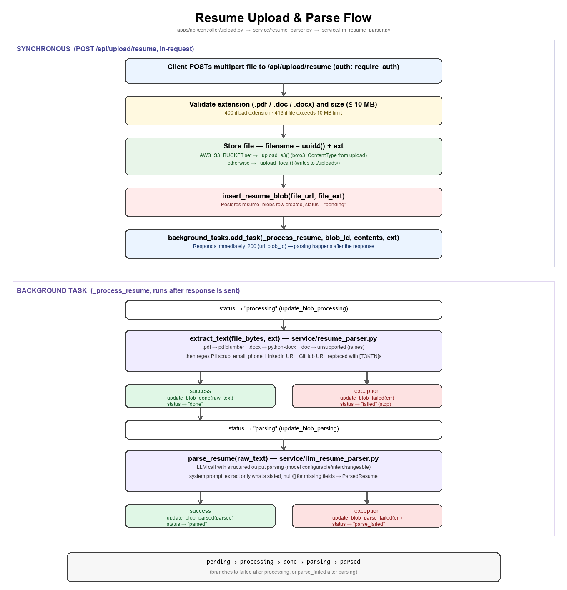

The design of AI Agent Interview System
Overview
The AI Interview System automates technical interviews end-to-end, replacing a recruiter's time-consuming phone screen with an AI-conducted voice interview. Recruiters create a job posting and let the system parse the job description and each candidate's resume, automatically scoring resume-to-job fit before an interview is even scheduled. When a candidate proceeds, an AI voice agent — built on LiveKit for real-time audio — conducts a structured interview over a scripted template (introduction, a deep dive into a resume project, behavioral questions, and an open Q&A), asking questions and adapting to the candidate's spoken responses in real time. Every turn of the conversation is transcribed and logged, and once the interview ends, the system automatically evaluates the candidate against a multi-dimension scorecard with per-dimension scores, supporting evidence, and an overall hire/no-hire recommendation — with historical scorecard embeddings used to calibrate scoring consistency across candidates. The result is a self-serve pipeline recruiters can point candidates at, that handles scheduling, live interviewing, transcription, and structured evaluation without a human interviewer needing to be present for the initial screen.
Project Structure
| Component | Path | Description |
|---|---|---|
web | apps/web | Next.js 14 frontend |
api | apps/api | FastAPI backend (Postgres + Mongo) |
voice-agent | services/voice-agent | LiveKit voice agent worker |
migrate | infra/docker/postgres | One-shot Postgres migration runner (runs before api) |
postgres | — | Primary relational store (pgvector) |
mongo | — | Transcript/log storage |
livekit | — | Real-time media server for interview calls |
Setup
For setup steps, see the AI-interview-system README.
Architecture
Components
It combines a Next.js 14 frontend (apps/web) with a FastAPI backend (apps/api) backed by Postgres (with pgvector) and MongoDB, plus a LiveKit voice agent worker (services/voice-agent) that handles real-time voice interviews. LLM powers these features — resume/JD parsing, embeddings, and interview scoring. The whole stack is orchestrated via Docker Compose, with a one-shot migration runner (infra/docker/postgres) that applies versioned Postgres schema migrations automatically before the API starts.

Storage
The system uses hybrid DB System: PostgreSQL as the system of record for structured/relational data and MongoDB for interview transcripts.
There is a shared PostgreSQL connection pool for the API process, which is built on psycopg2.pool.ThreadedConnectionPool. init_pool() lazily creates the module-level ThreadedConnectionPool on first use and returns it and the subsequent calls returns the same instance. close_pool() closes all pooled connections and clears the module-level reference. psycopg2's pool.getconn() raises PoolError immediately if the pool is exhausted, rather than blocking. _acquire() smooths over short request bursts above DB_POOL_MAX_SIZE by retrying getconn() every 50ms (DB_POOL_ACQUIRE_RETRY_INTERVAL) until either a connection is available or DB_POOL_ACQUIRE_TIMEOUT elapses, at which point the PoolError propagates. get_db() is a context manager and the intended entry point for all DB access.


MongoDB stores interview conversation transcripts — the append-only log of turns exchanged between interviewer and candidate during a session. Everything lives in apps/api/mongo.py (client/connection) and apps/api/dao/transcripts.py. MONGO_URL env var configures the connection (default mongodb://localhost:27017). get_mongo_db() lazily creates a single module-level MongoClient on first call and reuses it for the life of the process (the client itself is thread-safe and pools connections internally, so there's no separate pool wrapper like the Postgres side has). It always returns the interview database.

Services
Resume ParserWhen a resume is uploaded, there are synchronous flows for validation, storing (S3 or local), inserting resume_blobs record with pending status. After that, there is an asynchronous process that contains extracting text, scrubbing PII data, parsing the resume using LLM.

Voice AgentLivekit provides a STT-LLM-TTS pipeline for speech recognition, language understanding, and speech synthesis. The voice agent (services/voice-agent/agent.py) is built on LiveKit agents, which wires together speech-to-text(STT), an LLM, and text-to-speech(TTS) into a single AgentSession. The pipeline is assembled once per interview, inside interview_agent().